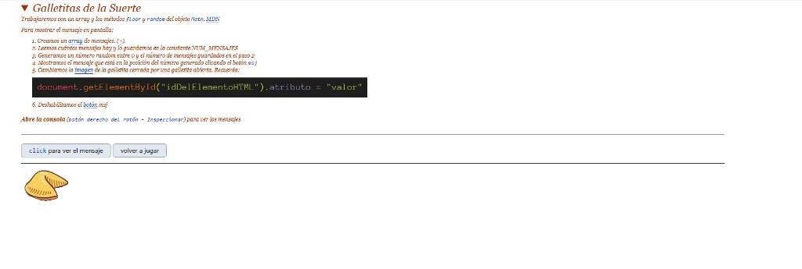
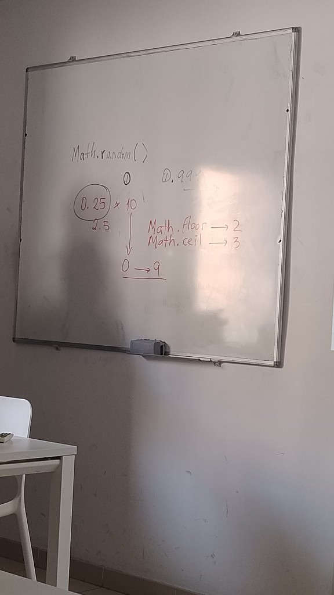
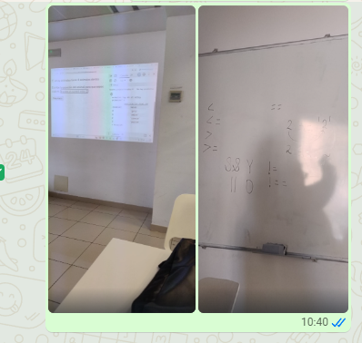

Guía de repaso · JavaScript día 2
Un solo documento (guion) con botones: principio, medio y final.
Bilingüe: Español + Français (cada bloque tiene su mini-resumen en francés).
Escuchar
Pulsa para escuchar. No habla sola.
Consejo: si la voz no te gusta, cambia la voz en la configuración del navegador/Windows.
¿Por qué existe esta guía?
Esta guía es tu resumen de clase: recoge tus dudas tal como fueron saliendo mientras trabajabas con el HTML del ejercicio que pegaste (la página de “Galletitas de la Suerte”) y con las explicaciones de la profe durante el curso.
La idea es que cuando repases, no tengas que leer todo en orden: puedes entrar por las mismas preguntas que hiciste y saltar directo a la respuesta.
FR: Cette page est ton résumé de cours : tes questions viennent du HTML de l’exercice et des explications de la prof. Tu révises en cliquant sur tes propres questions.
Nota (curso)
Si necesitas ver todo el HTML que usamos en clase, míralo en el CV del día 1 o del día 2: la profe dejó allí todas las chuletas.
FR: Pour retrouver tout le HTML du cours, regarde le CV du jour 1 ou du jour 2 : la prof y a laissé les “chuletas” (fiches mémo).
Notas de arreglos (lo que se arregló y cómo)
Problema: “Show View” es estrecho y los botones estaban con
hidden md:flex → se ocultaban.
Solución: quitamos hidden md:flex y dejamos el panel como flex.
FR: “Show View” est étroit ; avec hidden md:flex les boutons étaient cachés. On a laissé flex.
Problema: la imagen estaba enlazada a una ruta interna de Cursor, y Live Server no la servía.
Solución: copiamos la captura a tu proyecto (img/captura-clase-dia2.png) y actualizamos el src para usar esa ruta normal.
FR: On a mis l’image dans img/ pour que Live Server puisse l’afficher.
Problema: el contenido tenía un ancho máximo pequeño (max-w-4xl) y parecía móvil.
Solución: aumentamos a max-w-6xl y ajustamos la grilla del índice para pantallas grandes.
FR: On a augmenté la largeur max (max-w-6xl) pour un rendu “desktop”.
Problema: la captura ocupaba demasiado o requería zoom.
Solución: hicimos la imagen “contain” y limitada al alto de la
pantalla: max-h-[70vh] max-w-full object-contain.
FR: Image ajustée à l’écran avec object-contain et une hauteur max.
En ordenador, usa los botones fijos a la derecha para saltar entre secciones.
Índice
Toca un botón para ir directo al tema.
Principio
Objetivo: separar archivos (HTML / JS / imágenes) y aprender a verificar con consola.
Respuesta
FR: On sépare HTML (structure), JS (logique) et images (fichiers .png) pour garder le projet clair.
- HTML: estructura (botones, imagen, lugar del mensaje).
- JS: lógica (elige mensaje al azar, cambia imagen, deshabilita botón).
- Imágenes: archivos
.pngque el HTML/JS cargan.
carpeta galleta/
index.html
img/
galletas1.png
galletas2.png
js/
app.js
Si tu HTML tiene src="img/galletas1.png", las imágenes van dentro
de img/.
Respuesta
FR: Le head configure la page (styles), le body affiche les éléments, et le script charge le JavaScript.
- Head: metadatos + Tailwind + estilos + título.
- Body: instrucciones (
details), botones, imagen y el párrafo del mensaje. - Script: carga
./js/app.js(la lógica vive ahí).
id="boton-mensaje": botón que llamamostrarMensaje().id="galleta": imagen que cambia cuando juegas.id="mensaje": donde se escribe el mensaje.
Aquí tienes el listado oficial de atributos (por ejemplo src,
href, id,
class, etc.).
FR: Lien officiel (MDN) avec la liste des attributs HTML.
Explicación
FR: Capture du cours + explication paragraphe par paragraphe, puis l’idée générale.

Es el nombre del ejercicio. La idea es que la página te muestre un mensaje “de suerte” como si abrieras una galleta.
FR: Nom de l’exercice : afficher un message “chance” comme une fortune cookie.
Te dice la herramienta principal del día: un array con mensajes, y Math.random + Math.floor para escoger uno al azar.
FR: L’outil du jour : un array + random/floor pour
choisir un message au hasard.
Es la receta del programa:
- Crear el array de mensajes.
- Guardar cuántos mensajes hay: NUM_MENSAJES.
- Generar un número al azar entre 0 y NUM_MENSAJES - 1.
- Mostrar el mensaje de esa posición cuando haces click.
- Cambiar la imagen de galleta cerrada a abierta.
- Deshabilitar el botón para no repetir sin recargar.
FR: C’est la recette : tableau → taille → index au hasard → afficher → changer image → désactiver le bouton.
Es la fórmula para cambiar un atributo de un elemento HTML con JavaScript.
document.getElementById("idDelElementoHTML").atributo = "valor"
En tu ejercicio, el atributo que cambias es src de la imagen:
img/galletas1.png → img/galletas2.png.
FR: Formule pour changer un attribut HTML (ex: src d’une image).
Te recuerda usar la consola para ver los mensajes y errores,
porque el ejercicio hace console.log.
FR: Ouvre la console pour voir les logs et les erreurs.
La página es HTML + imágenes (lo que se ve) y el JavaScript (lo que hace la lógica). Con un array de mensajes y un número al azar, eliges un mensaje, lo muestras en pantalla, cambias la imagen (src) y bloqueas el botón.
FR: HTML+images affichent, JS choisit un message au hasard
(array + random), l’affiche, change src et désactive le bouton.
Respuesta
FR: “Show View” est plus étroit, donc avec hidden md:flex les boutons étaient cachés. On a mis flex pour les afficher toujours.
- Qué pasaba: “Show View” te muestra la página en un área más estrecha (como si fuera móvil).
- La causa: los botones tenían clases Tailwind
hidden md:flex, que significa: oculto en pantallas pequeñas, visible a partir demd. - Por qué en “Go Live” sí: ahí la ventana suele ser más ancha
y ya entra en tamaño
md, entonces se mostraban. - Cómo lo arreglamos: quitamos
hidden md:flexy dejamos el panel comoflexpara que se vea siempre.
Respuesta
FR: La console du navigateur sert à voir les erreurs (rouge) et
tes console.log.
- Abrir: F12 → pestaña Console (o clic derecho → Inspeccionar).
- Rojo: errores. Amarillo: avisos. Normal: tus
console.log.
typeof mostrarMensaje
document.getElementById("boton-mensaje")
document.getElementById("galleta")Respuesta
FR: Extension pour voir des logs plus vite dans l’éditeur, mais la console navigateur reste la référence pour les 404/chargements.
- Qué es: ayuda a ver logs (
console.log) desde el editor. - Ojo: para errores de carga (404, script que no carga), mira la consola del navegador.
Medio
Objetivo: entender tipos, arrays, .length, contar desde 0 y el símbolo $.
Respuesta
FR: Les primitifs sont des valeurs simples (string, number, boolean, etc.). Les objets regroupent des données (objets, arrays, fonctions).
Primitivos:
- string: texto.
- number: números (incluye
NaNeInfinity). - boolean:
true/false. - undefined: sin valor asignado aún.
- null: sin valor intencional.
- bigint: enteros grandes.
- symbol: identificador único.
Compuestos:
- object: objetos, arrays, funciones, etc.
- array: lista ordenada (es un objeto).
Respuesta
FR: NaN est une
valeur spéciale du type number, pas un type séparé.
NaN es un valor especial de number.
typeof NaN === "number"Respuesta
FR: Un array est une liste. Ici, il stocke plusieurs messages et on en choisit un au hasard.
Array = lista de mensajes para elegir uno al azar.
const mensajes = ["mensaje 1", "mensaje 2", "mensaje 3"];Respuesta
FR: .length =
nombre d’éléments (array) ou de caractères (string).
En arrays: cuántos elementos. En strings: cuántos caracteres.
["a", "b", "c"].length // 3
"hola".length // 4Respuesta
FR: L’indice 0 veut dire “0 pas depuis le début”. Le dernier
indice est length - 1.
Índice = cuántos pasos desde el inicio. 0 pasos = inicio.
const mensajes = ["A", "B", "C"];
// índices: 0 1 2
// último índice = length - 1Respuesta
FR: $ peut être
un nom de variable, ou ${...} dans les template strings.
- JS: puede ser nombre de variable (convención).
- Template strings:
${...}mete variables en texto. - Terminal: a veces es solo el prompt.
const $boton = document.getElementById("boton-mensaje");
const nombre = "Mouss";
`Hola ${nombre}`Respuesta (muy simple)
FR: Math.random()
donne un nombre “au hasard” entre 0 et 1 (1 n’est jamais inclus).
Math.random() es como una ruleta: cada vez que la llamas, te da un número al azar entre
0 y casi 1
(nunca 1).
Math.random(); // 0 <= número < 1
// Para elegir un mensaje al azar:
const indice = Math.floor(Math.random() * NUM_MENSAJES);Explicación
FR: Explication des photos du tableau : Math.random, floor/ceil, et les comparaisons (<,
<=, etc.).

Math.random()da un número entre 0 y casi 1.- Si lo multiplicas por 10, obtienes algo entre 0 y casi 10.
Math.floor(2.5)→ 2 (redondea hacia abajo).Math.ceil(2.5)→ 3 (redondea hacia arriba).- Por eso para sacar un entero 0–9 se usa
floor(random * 10).
const n = Math.floor(Math.random() * 10); // 0..9
FR: floor =
vers le bas, ceil = vers le haut. Pour 0..9 : floor(random*10).

Son operadores de comparación: sirven para comparar dos
valores y obtener true o false.
<: menor que<=: menor o igual que>: mayor que>=: mayor o igual que===: igual (estricto, compara valor y tipo)
3 < 5 // true
5 >= 5 // true
"5" === 5 // false (string vs number)
FR: Comparaisons : elles donnent true/false.
=== compare valeur + type.
Final
Objetivo: entender let vs const,
reasignar y nombres de constantes.
Respuesta
FR: let si tu dois changer la valeur (réassigner). const si tu ne veux pas remplacer la variable.
- let: puedes reasignar.
- const: no puedes reasignar.
let edad = 15;
edad = 16; // reasignación ✅
const nombre = "Mouss";
// nombre = "Otro"; // reasignación ❌Respuesta
FR: Réassigner = remplacer ce que la variable contient par une autre valeur.
Reasignar = reemplazar lo que guarda la variable por otra cosa.
let puntos = 0;
puntos = 10; // reasignarRespuesta
FR: Avec const tu ne remplaces pas l’array entier, mais tu peux modifier son contenu (push, etc.).
Porque normalmente no quieres reemplazar la lista entera.
const mensajes = ["hola"];
mensajes.push("adiós"); // cambiar contenido ✅
// mensajes = ["nuevo"]; // reasignar ❌Respuesta
FR: Convention pour les constantes “fixes” (config, limites). Ce n’est pas le type, c’est l’intention.
- Convención para “constantes fijas” (config, límites).
- No significa “primitivo”: significa intención (“esto es fijo”).
- Se usa
_(guion bajo), no-.
const IVA = 0.21;
const MAX_INTENTOS = 3;
const NUM_MENSAJES = 6;Respuesta
FR: En HTML, on utilise souvent le kebab-case (minuscules +
tirets) pour les id et attributs.
Convención kebab-case: minúsculas y separar palabras con - (por ejemplo boton-mensaje).
Consejo: abre este archivo con Live Server para repasar con los botones.